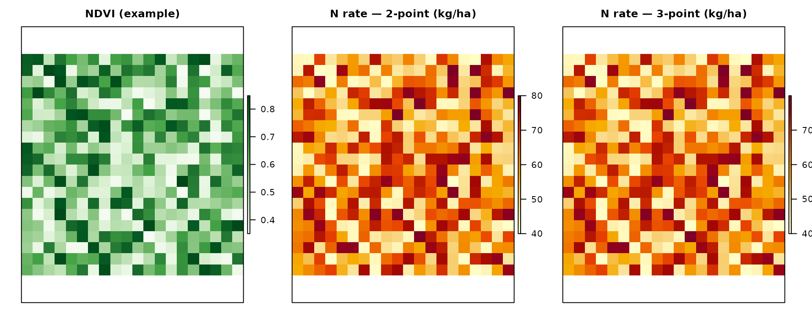
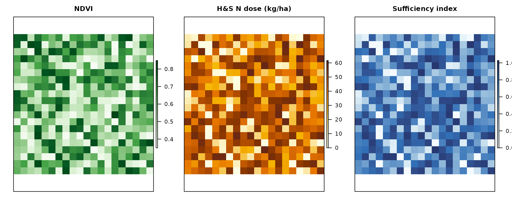

Nitrogen Fertilization Management with NFert: A Comprehensive Guide
Michele Croci, Stefano Amaducci
2026-04-24
Source:vignettes/NFert.Rmd
NFert.RmdIntroduction
The NFert R package provides a comprehensive toolkit for calculating nitrogen fertilization requirements in field crops following the Emilia-Romagna Regional Recommendations for integrated production. This vignette demonstrates how to use NFert for nitrogen balance calculations, soil fertility assessment, and precision agriculture applications.
What is Nitrogen Balance?
Nitrogen balance is a quantitative method that accounts for all nitrogen inputs and outputs in an agricultural system. The general equation used in NFert is:
Where:
- A: Crop nitrogen requirements (kg/ha)
- B: Soil nitrogen supply (sum of b1 and b2) (kg/ha)
- C1: Nitrogen leaching loss in winter (kg/ha)
- C2: Nitrogen leaching loss in spring (kg/ha)
- D: Immobilization and dispersion losses (kg/ha)
- E: Nitrogen from previous crop residues (kg/ha)
- F_{org}: Nitrogen from organic fertilizers (kg/ha)
- G: Natural nitrogen contributions (kg/ha)
Normative framework: DPI 2025–2026 and FertDPI
NFert implements the method of the balance (Allegato 2) of the Disciplinari di Produzione Integrata (DPI) Emilia-Romagna, in line with the Guida alla Fertilizzazione Minerale e Organica (DPI 2025) and the regional tool FertDPI / Fert_Office. References: DPI Norme Generali (Allegato 2, 3, 4, 6, 7, 9), Reg. reg. 2/2024 and 3/2017, Direttiva Nitrati (91/676/CEE). In Zone Vulnerabili ai Nitrati (ZVN) the MAS (limiti di massima applicazione standard) are binding and the 170 kg N/ha/year ceiling from livestock effluents applies at farm level.
Formula N (Guida DPI 2025):
N da apportare = A − B +
C + D − E −
F − G
-
A = Fabbisogni colturali (assorbimenti unitari ×
produzione attesa).
-
B = Fertilità del suolo: B1
(mineralizzazione S.O.: coefficiente × S.O. % × coefficiente tempo) +
B2 (azoto pronto: coefficiente × N totale ‰; solo
colture con ciclo < 1 anno). Per pluriennali B = B1 soltanto.
-
C = Perdite per lisciviazione: Ca
(autunno-inverno: <150 mm nessuna; 150–250 mm perdita progressiva;
>250 mm tutto l’N pronto) + Cb (febbraio: 1 kg N/ha
ogni 10 mm oltre 250 mm cumulati).
-
D = Immobilizzazione e dispersione = B × fattore di
correzione fc (in funzione di ossigeno e tessitura: es. buona
0,15–0,25, moderata 0,20–0,30, impedita 0,30–0,40).
-
E = N da residui della precessione (tabella:
cereali paglia asportata −10, interrata −30; medica +80; soia 0;
leguminose da granella +40; ecc.).
-
F = N da fertilizzazioni organiche anni precedenti
(ammendanti 50/30/20 %; Cattle slurry 30/15/10; suino/pollina
15/10/5).
- G = Apporti naturali (precipitazioni; fissazione per leguminose).
NFert computes the balance and subtracts the current-year organic N (Forg) to obtain the mineral N to apply. Fractioning rules (max 100 kg/ha N per intervention for herbaceous crops, 60 kg/ha for tree crops; min 7 days between interventions) and presemina/autumn caps (e.g. max 30 kg/ha presemina, max 40 kg/ha arboree before 15 Oct) are set by DPI and must be respected in the field plan.
Soil texture (DPI groupings): The 12 USDA texture
classes are grouped into three macro-categories used for efficiency and
coefficients: (1) Tendenzialmente sabbioso (S, SF, FS), (2)
Franco / Medio impasto (L, F, FL, FSA, FA), (3)
Tendenzialmente argilloso (FLA, AS, AL, A). NFert’s
tri3() and calc_soil_group_and_id_rag()
provide texture and soil group.
Maximum allowed doses (MAS): Each crop has a ceiling
for N and P₂O₅ that must not be exceeded. Use get_MAS(crop)
and check_MAS(crop, N_planned) to retrieve and check
against MAS (see section below).
Organic N efficiency (DPI): The share of organic N
available to the crop in the year of application depends on fertilizer
type, distribution technique (efficient / medium /
low), and soil texture. Efficient = injection,
fertigation, incorporation within 4 h; medium = band spreading with
quick incorporation; low = surface spreading without incorporation.
Ammendanti compostati use a fixed 40% efficiency. NFert’s
organic_fertilization() uses factors by source and
frequency; for DPI-specific efficiency by soil and distribution, refer
to the FertDPI ‘Efficienza’ sheet or the regional guide.
Package Overview
NFert provides the following categories of functions:
-
Field-scale nitrogen balance -
N_balance()plus the ten component helpers (crop demand, soil supply, leaching, immobilisation, previous-crop residue, organic contributions, natural deposition). -
Phosphorus and potassium balance -
P_balance(),K_balance(). -
Distribution plan -
plan_distribution()with MAS and 170 kg N ZVN checks. -
Precision agriculture -
variable_rate_N(),estimate_N_rate_from_calibration_curve()andestimate_N_rate_from_holland_schepers()for VI-based VRT;build_strip_prescription()for machine-width strips along an A-B line;export_prescription()/export_prescription_all()for Shapefile, GeoJSON, KML, GeoPackage, John Deere, Trimble and ISOXML TASKDATA formats. -
Remote-sensing diagnosis -
compute_vi()(six VIs),compute_NNI()/compute_NNI_from_S2()/crop_params_NNI()for the GPR-based pipeline,nni_from_vi_empirical()for the single-VI regression path,estimate_biophysical()for canopy trait retrieval. -
Farm-level workflow -
farm_balance()iteratesN_balance()over every feature of a GeoJSON / Shapefile and returns an enrichedsflayer ready for export. -
Shiny application -
run_app()opens a six-tab web interface with interactive forms, leaflet maps and one-click export.
Getting Started: A Simple Example
Let’s start with a basic example calculating the nitrogen balance for a wheat crop:
# Calculate nitrogen balance for winter wheat
wheat_balance <- N_balance(
expected_yield_tons_ha = 8,
crop = "Soft wheat FF - strong (grain)",
ccp = "Autumn-winter crop <150 days",
sand = 30,
clay = 25,
Ntot = 1.2,
SOM = 2.0,
CN = 9,
oxygen_availability = "Normal",
winter_rain = 160,
start_spring_rain = 40,
prev_crop = "Winter cereals straw removal",
source = "Cattle slurry",
fertorg_frequency = "every year",
location = "Plain adjacent to urbanized areas",
forg_quantity = 100
)
# Display results
print(wheat_balance)
#> A B b1 b2 C1 C2 D E F Forg G surplus_pluviometrico
#> 1 248.8 55.2 31.2 24 30 3.12 23.8 0 0 0.3 10 FALSE
# Calculate final nitrogen requirement
required_N <- calculate_N_fertilization(wheat_balance)
cat("\nRequired nitrogen fertilization:", round(required_N, 2), "kg/ha\n")
#>
#> Required nitrogen fertilization: 240.22 kg/haUnderstanding the Nitrogen Balance Components
Component 1: Crop Nitrogen Demand (A)
The crop nitrogen demand is calculated based on expected yield and crop-specific nitrogen uptake coefficients:
# Calculate crop nitrogen demand
crop_demand <- calc_crop_N_demand(
expected_yield_tons_ha = 10,
crop = "Soft wheat FF - strong (grain)"
)
print(crop_demand)
#> $N_requirement
#> [1] 311
#>
#> $units
#> [1] "kg/ha"
#>
#> $n_fixation_pct
#> [1] 0
# Available crops in the database
head(NFert::uptake_table, 10)
#> id crop_id crop N P2O5
#> 1 1 A2 Kiwifruit (green flesh) - fruit, wood and leaves 0.59 0.1600000
#> 2 2 Ab2 Kiwifruit (yellow flesh) - fruit, wood and leaves 0.59 0.1600000
#> 3 3 A4 Apricot (medium yield) - fruit, wood and leaves 0.55 0.1300000
#> 4 4 A5 Apricot (high yield) - fruit, wood and leaves 0.55 0.1300000
#> 5 5 A6 Other fruit trees - fruit, wood and leaves 0.33 0.2838462
#> 6 6 A8 Orange - fruit, wood and leaves 0.28 0.1300000
#> 7 7 A10 Chestnut (fruit only) 0.84 0.3300000
#> 8 8 A12 Cherry - fruit, wood and leaves 0.67 0.2200000
#> 9 9 A14 Clementine - fruit, wood and leaves 0.28 0.1300000
#> 10 10 A15 Quince (fruit, wood and leaves) 0.33 0.0800000
#> K2O balance reference_yield std_N_demand std_P2O5_demand
#> 1 0.5900000 sì 25 147.5 40.0
#> 2 0.5900000 sì 30 177.0 48.0
#> 3 0.5300000 sì 13 71.5 16.9
#> 4 0.5000000 sì 18 99.0 23.4
#> 5 0.7411538 sì NA NA NA
#> 6 0.3900000 sì 30 84.0 39.0
#> 7 0.8600000 sì NA NA NA
#> 8 0.5900000 sì 9 60.3 19.8
#> 9 0.4300000 sì 25 70.0 32.5
#> 10 0.3300000 sì 60 198.0 48.0
#> std_K2O_demand harvested_part
#> 1 147.5 frutti
#> 2 177.0 frutti
#> 3 68.9 frutti
#> 4 90.0 frutti
#> 5 NA frutti
#> 6 117.0 frutti
#> 7 NA frutti
#> 8 53.1 frutti
#> 9 107.5 frutti
#> 10 198.0 frutti
#> crop_en
#> 1 Kiwifruit (green flesh) - fruit, wood and leaves
#> 2 Kiwifruit (yellow flesh) - fruit, wood and leaves
#> 3 Apricot (medium yield) - fruit, wood and leaves
#> 4 Apricot (high yield) - fruit, wood and leaves
#> 5 Other fruit trees - fruit, wood and leaves
#> 6 Orange - fruit, wood and leaves
#> 7 Chestnut (fruit only)
#> 8 Cherry - fruit, wood and leaves
#> 9 Clementine - fruit, wood and leaves
#> 10 Quince (fruit, wood and leaves)
#> crop_it
#> 1 Actinidia polpa verde frutti, legno e foglie
#> 2 Actinidia polpa gialla frutti, legno e foglie
#> 3 Albicocco media produzione frutti, legno e foglie
#> 4 Albicocco alta produzione frutti, legno e foglie
#> 5 Altri fruttiferi frutti, legno e foglie
#> 6 Arancio frutti, legno e foglie
#> 7 Castagno solo frutti
#> 8 Ciliegio frutti, legno e foglie
#> 9 Clementine frutti, legno e foglie
#> 10 Cotogno (frutti, legno e foglie)Component 2: Soil Fertility (B = b1 + b2)
Soil fertility accounts for both readily available nitrogen (b1) and mineralizable nitrogen from organic matter (b2):
# Calculate soil fertility
soil_N <- soil_fertility(
Ntot = 1.2,
SOM = 2.5,
soil.group = "Sandy textures",
CN = 9,
ccp = "Autumn-winter crop <150 days"
)
print(soil_N)
#> $b1
#> [1] 34.08
#>
#> $b2
#> [1] 45
#>
#> $units
#> [1] "kg/ha"
cat("Total soil N supply (B):", soil_N$b1 + soil_N$b2, "kg/ha\n")
#> Total soil N supply (B): 79.08 kg/haDetermining Soil Group
First, you need to determine the soil group based on texture:
# Classify soil texture using simplified method
texture_class <- tri3(clay = 20, sand = 35)
cat("Simplified texture class:", texture_class, "\n")
#> Simplified texture class: F
# Get detailed classification and soil properties
soil_props <- calc_soil_group_and_id_rag(clay = 20, sand = 35)
print(soil_props)
#> $soil.group
#> [1] "Loamy textures"
#>
#> $id_rag
#> [1] 2
#>
#> $TRI3
#> [1] "F"Component 3: Leaching Losses (C1, C2)
Leaching losses depend on rainfall and soil drainage properties:
# Calculate leaching losses
leaching <- leaching_loss(
winter_rain = 180,
start_spring_rain = 45,
oxygen_availability = "Normal",
id_rag = 3,
b1 = 25
)
print(leaching)
#> $C1
#> [1] 20
#>
#> $C2
#> [1] 7.5
#>
#> $surplus_pluviometrico
#> [1] FALSE
cat("Total leaching loss:", leaching$C1 + leaching$C2, "kg/ha\n")
#> Total leaching loss: 27.5 kg/haComponent 4: Immobilization Loss (D)
Immobilization occurs when soil microorganisms use nitrogen for their own growth:
# Calculate immobilization loss
immobilization <- calc_N_immobilization_loss(
B = 50,
oxygen_availability = "Normal",
id_rag = 3
)
cat("Immobilization loss (D):", immobilization, "kg/ha\n")
#> Immobilization loss (D): 15 kg/haComponent 5: Previous Crop Residues (E)
Nitrogen contribution from previous crop residues:
# Nitrogen from previous crop
residue_N <- nitrogen_from_previous_crop_residues(
previous_crop = "Winter cereals straw removal"
)
cat("Nitrogen from residues (E):", residue_N, "kg/ha\n")
#> Nitrogen from residues (E): -10 kg/ha
# Available previous crops
head(NFert::e.table, 10)
#> ID_Pre previous_crop N legume
#> 1 1 Sugar beet 30 FALSE
#> 2 2 Winter cereals straw removal -10 FALSE
#> 3 3 Winter cereals straw burial -30 FALSE
#> 4 4 Rapeseed 20 FALSE
#> 5 5 Sunflower 0 FALSE
#> 6 6 Maize stalks removed -10 FALSE
#> 7 7 Maize stalks buried -40 FALSE
#> 8 8 Alfalfa thinned 60 TRUE
#> 9 9 Alfalfa in good conditions 80 TRUE
#> 10 10 Leaf vegetables 25 FALSE
#> previous_crop_it
#> 1 Barbabietola
#> 2 Cereale autunno-vern. Paglia asportata
#> 3 Cereale autunno-vern. Paglia interrata
#> 4 Colza
#> 5 Girasole
#> 6 Mais stocchi asportati
#> 7 Mais stocchi interrati
#> 8 Medicaio diradato
#> 9 Medicaio in buone conndizioni
#> 10 Orticole a fogliaComponent 6: Organic Fertilizer (Forg)
Contribution from organic fertilizers:
# Calculate organic fertilizer contribution
organic_N <- organic_fertilization(
source = "Cattle slurry",
frequency = "every year",
quantity = 100
)
cat("Organic fertilizer N (Forg):", organic_N, "kg/ha\n")
#> Organic fertilizer N (Forg): 0.3 kg/ha
# Compare different organic sources (names must match `f.table$source`)
sources <- c("Cattle slurry", "Manures", "Pig slurry or poultry manure")
organic_comparison <- data.frame(
source = sources,
N_contribution = sapply(sources, function(s) {
organic_fertilization(source = s, frequency = "every year", quantity = 100)
})
)
print(organic_comparison)
#> source N_contribution
#> Cattle slurry Cattle slurry 0.30
#> Manures Manures 0.50
#> Pig slurry or poultry manure Pig slurry or poultry manure 0.15Component 7: Natural Contribution (G)
Natural nitrogen inputs from atmospheric deposition:
# Calculate natural nitrogen contribution
natural_N <- natural_contribution(
location = "Plain adjacent to urbanized areas",
ccp = "Autumn-winter crop <150 days"
)
cat("Natural contribution (G):", natural_N, "kg/ha\n")
#> Natural contribution (G): 10 kg/ha
# Available locations
head(NFert::g.table, 10)
#> ID_UBI location annual_deposition
#> 1 1 Plain adjacent to urbanized areas 20
#> 2 2 Isolated plain 15
#> 3 3 Hill or mountain 10
#> location_it
#> 1 Pianura limitrofa a zone urbanizzate
#> 2 Pianura isolata
#> 3 Collina o montagnaComplete Workflow: Maize Production Example
Let’s work through a complete example for maize production:
# Step 1: Define field parameters
maize_params <- list(
expected_yield_tons_ha = 12, # tons/ha
crop = "Silage maize (class 700)", # or "Silage maize (class 700)" (alias)
ccp = "Spring-summer crop 100–130 days",
clay = 28,
sand = 32,
Ntot = 1.5,
SOM = 2.8,
CN = 10,
oxygen_availability = "Normal",
winter_rain = 165,
start_spring_rain = 35,
prev_crop = "Winter cereals straw removal",
source = "Cattle slurry",
fertorg_frequency = "every year",
location = "Plain adjacent to urbanized areas",
forg_quantity = 90
)
# Step 2: Calculate complete nitrogen balance
maize_balance <- do.call(N_balance, maize_params)
# Step 3: Display detailed results
cat("=== MAIZE NITROGEN BALANCE ===\n")
#> === MAIZE NITROGEN BALANCE ===
print(maize_balance)
#> A B b1 b2 C1 C2 D E F Forg G surplus_pluviometrico
#> 1 46.8 84.024 39 45.024 30 5.85 31.006 0 0 0.27 13.4 FALSE
# Step 4: Calculate final requirement
maize_N_requirement <- calculate_N_fertilization(maize_balance)
cat("\nFinal N requirement:", round(maize_N_requirement, 2), "kg/ha\n")
#>
#> Final N requirement: 15.96 kg/ha
# Step 5: Interpretation
cat("\n=== INTERPRETATION ===\n")
#>
#> === INTERPRETATION ===
cat("Crop demand (A):", round(maize_balance$A, 1), "kg/ha\n")
#> Crop demand (A): 46.8 kg/ha
cat("Soil supply (B):", round(maize_balance$B, 1), "kg/ha\n")
#> Soil supply (B): 84 kg/ha
cat("Leaching losses (C1+C2):", round(maize_balance$C1 + maize_balance$C2, 1), "kg/ha\n")
#> Leaching losses (C1+C2): 35.9 kg/ha
cat("Immobilization (D):", round(maize_balance$D, 1), "kg/ha\n")
#> Immobilization (D): 31 kg/ha
cat("Residue contribution (E):", round(maize_balance$E, 1), "kg/ha\n")
#> Residue contribution (E): 0 kg/ha
cat("Organic fertilizer (Forg):", round(maize_balance$Forg, 1), "kg/ha\n")
#> Organic fertilizer (Forg): 0.3 kg/ha
cat("Natural contribution (G):", round(maize_balance$G, 1), "kg/ha\n")
#> Natural contribution (G): 13.4 kg/haChecking against Maximum Allowed Doses (MAS)
DPI (Allegato 9, Reg. reg. 2/2024) sets maximum allowed doses
(MAS) of N per crop; in ZVN they are binding. The planned dose
must not exceed MAS. Use get_MAS(crop, edition = "2025")
for the ZVN table from the Guida alla Fertilizzazione 2025, or
get_MAS(crop, edition = "2026") (default) for the
FertDPI-style table. Use check_MAS() to verify a planned N
dose.
# List MAS for main crops (default: edition 2026)
get_MAS()
#> crop
#> 1 Frumento tenero (granella)
#> 2 Grano tenero FF (granella)
#> 3 Frumento tenero (pianta intera)
#> 4 Grano duro (granella)
#> 5 Mais da granella
#> 6 Mais da insilato
#> 7 Shredded corn class 700
#> 8 Orzo
#> 9 Girasole
#> 10 Soia
#> 11 Pomodoro da industria
#> 12 Melo
#> 13 Pero
#> 14 Pesco e Nettarine
#> 15 Vite (uva da vino)
#> 16 Actinidia
#> 17 Ciliegio
#> crop_en mas_N mas_P2O5
#> 1 Soft wheat (grain) 200 100
#> 2 Soft wheat FF - strong (grain) 200 100
#> 3 Soft wheat (whole plant) 200 100
#> 4 Durum wheat (grain) 200 100
#> 5 Grain maize 500-700 (grain) 260 150
#> 6 Silage maize (class 700) 340 150
#> 7 Silage maize (class 700) 340 150
#> 8 Barley (grain) 180 90
#> 9 Sunflower (achenes) 160 90
#> 10 Soybean (grain) NA 100
#> 11 Processing tomato (medium yield) 200 130
#> 12 Apple 340 120
#> 13 Pear 340 120
#> 14 Peach and Nectarine 340 175
#> 15 Vineyard (plain) - grapes, wood and leaves 120 60
#> 16 Kiwifruit (green flesh) - fruit, wood and leaves 340 150
#> 17 Cherry 340 120
#> yield_ref_min yield_ref_max type
#> 1 6 8 Erbacee
#> 2 6 8 Erbacee
#> 3 6 8 Erbacee
#> 4 5 6 Erbacee
#> 5 10 13 Erbacee
#> 6 40 50 Erbacee
#> 7 40 50 Erbacee
#> 8 5 7 Erbacee
#> 9 2 3 Erbacee
#> 10 3 4 Erbacee
#> 11 70 100 Orticole
#> 12 35 35 Arboree
#> 13 30 30 Arboree
#> 14 25 25 Arboree
#> 15 8 12 Arboree
#> 16 25 25 Arboree
#> 17 9 9 Arboree
# DPI 2025 Guida (ZVN table) – different values and crops
get_MAS(edition = "2025")
#> crop mas_N reference_yield type
#> 1 Frumento tenero (granella) 180 6.5 Erbacee
#> 2 Grano tenero FF (granella) 180 6.5 Erbacee
#> 3 Frumento duro (granella) 190 6.0 Erbacee
#> 4 Grano duro (granella) 190 6.0 Erbacee
#> 5 Orzo 150 6.0 Erbacee
#> 6 Mais da granella 280 13.0 Erbacee
#> 7 Mais da insilato 280 23.0 Erbacee
#> 8 Shredded corn class 700 280 23.0 Erbacee
#> 9 Soia 30 NA Erbacee
#> 10 Barbabietola da zucchero 160 60.0 Erbacee
#> 11 Pomodoro da industria 180 80.0 Orticole
#> 12 Patata 190 48.0 Orticole
#> 13 Melo 120 35.0 Arboree
#> 14 Pero 120 30.0 Arboree
#> 15 Pesco e Nettarine 175 25.0 Arboree
#> 16 Vite (uva da vino) 100 18.0 Arboree
#> 17 Asparago verde 210 7.0 Orticole
# Get MAS for a specific crop
get_MAS("Soft wheat FF - strong (grain)")
#> crop crop_en mas_N mas_P2O5
#> 2 Grano tenero FF (granella) Soft wheat FF - strong (grain) 200 100
#> yield_ref_min yield_ref_max type
#> 2 6 8 Erbacee
get_MAS("Soft wheat FF - strong (grain)", edition = "2025") # 180 kg/ha
#> NULL
get_MAS("Grain maize 500-700 (grain)", edition = "2025") # 280 kg/ha (irriguo)
#> NULL
# Check if a planned N dose is within MAS
check_MAS("Soft wheat FF - strong (grain)", 180) # OK
#> $ok
#> [1] TRUE
#>
#> $mas_N
#> [1] 200
#>
#> $N_planned
#> [1] 180
#>
#> $message
#> [1] "Planned N is within MAS."
check_MAS("Soft wheat FF - strong (grain)", 220) # Over MAS
#> $ok
#> [1] FALSE
#>
#> $mas_N
#> [1] 200
#>
#> $N_planned
#> [1] 220
#>
#> $message
#> [1] "Planned N (220 kg/ha) exceeds MAS (200 kg/ha)."
check_MAS("Grain maize 500-700 (grain)", 250) # OK (MAS 260 or 280 depending on edition)
#> $ok
#> [1] TRUE
#>
#> $mas_N
#> [1] 260
#>
#> $N_planned
#> [1] 250
#>
#> $message
#> [1] "Planned N is within MAS."
# After calculating requirement, verify against MAS
required_N <- calculate_N_fertilization(wheat_balance)
check_MAS("Soft wheat FF - strong (grain)", round(required_N, 0))
#> $ok
#> [1] FALSE
#>
#> $mas_N
#> [1] 200
#>
#> $N_planned
#> [1] 240
#>
#> $message
#> [1] "Planned N (240 kg/ha) exceeds MAS (200 kg/ha)."Soia: MAS N = 30 kg/ha (ZVN 2025); in case of failed rhizobium, up to 120 kg/ha is allowed. Reductions: −40 kg/ha after prato ≥3 years; −60 kg/ha after medicaio ≥3 years. In ZVN, respect the 170 kg N/ha/year limit from livestock effluents (farm average). All fertilizations must be recorded in field sheets within 7 days (DPI cap. 11).
Scenario Comparison
Compare different management scenarios for the same field:
# Base scenario parameters
base_params <- list(
expected_yield_tons_ha = 10,
crop = "Soft wheat FF - strong (grain)",
ccp = "Autumn-winter crop <150 days",
clay = 22,
sand = 30,
Ntot = 1.2,
SOM = 2.0,
CN = 9,
oxygen_availability = "Normal",
winter_rain = 160,
start_spring_rain = 40,
location = "Plain adjacent to urbanized areas"
)
# Scenario 1: No organic fertilization
scenario1 <- do.call(N_balance, c(base_params, list(
prev_crop = "Winter cereals straw removal",
source = "Cattle slurry",
fertorg_frequency = "never",
forg_quantity = 0
)))
N1 <- calculate_N_fertilization(scenario1)
# Scenario 2: With organic fertilization (80 m³/ha)
scenario2 <- do.call(N_balance, c(base_params, list(
prev_crop = "Winter cereals straw removal",
source = "Cattle slurry",
fertorg_frequency = "every year",
forg_quantity = 80
)))
N2 <- calculate_N_fertilization(scenario2)
# Scenario 3: Higher organic rate (150 m³/ha)
scenario3 <- do.call(N_balance, c(base_params, list(
prev_crop = "Winter cereals straw removal",
source = "Cattle slurry",
fertorg_frequency = "every year",
forg_quantity = 150
)))
N3 <- calculate_N_fertilization(scenario3)
# Compare scenarios
comparison <- data.frame(
Scenario = c("No organic", "80 m³/ha organic", "150 m³/ha organic"),
Organic_N = c(scenario1$Forg, scenario2$Forg, scenario3$Forg),
N_requirement = c(N1, N2, N3),
N_saved = c(0, N1 - N2, N1 - N3)
)
print(comparison)
#> Scenario Organic_N N_requirement N_saved
#> 1 No organic 0.00 302.72 0.00
#> 2 80 m³/ha organic 0.24 302.48 0.24
#> 3 150 m³/ha organic 0.45 302.27 0.45
cat("\nNitrogen saved with organic fertilization:\n")
#>
#> Nitrogen saved with organic fertilization:
cat("Scenario 2:", round(N1 - N2, 2), "kg/ha (", round((N1-N2)/N1*100, 1), "%)\n")
#> Scenario 2: 0.24 kg/ha ( 0.1 %)
cat("Scenario 3:", round(N1 - N3, 2), "kg/ha (", round((N1-N3)/N1*100, 1), "%)\n")
#> Scenario 3: 0.45 kg/ha ( 0.1 %)Precision Agriculture: NDVI-Based Variable Rate Application
NFert supports precision agriculture through NDVI-based nitrogen rate
estimation. Below, maps show example rasters (synthetic
field); in practice you replace ndvi_raster with your
Sentinel‑2 or UAV NDVI layer.
Method 1: Calibration Curve
# Create example NDVI raster
set.seed(42)
ndvi_raster <- raster(nrows=20, ncols=20, xmn=0, xmx=100, ymn=0, ymx=100)
values(ndvi_raster) <- runif(ncell(ndvi_raster), 0.35, 0.85)
# Two-point calibration
n_rate_2pt <- estimate_N_rate_from_calibration_curve(
raster = ndvi_raster,
minN = 40, # N rate for max NDVI (healthy areas)
maxN = 80, # N rate for min NDVI (areas needing more N)
calibration_type = "two-point",
plot = FALSE
)
# Three-point calibration (more accurate)
n_rate_3pt <- estimate_N_rate_from_calibration_curve(
raster = ndvi_raster,
minN = 40,
meanN = 60, # N rate for mean NDVI
maxN = 80,
calibration_type = "three-point",
plot = FALSE
)
# Compare results
cat("Two-point calibration - Mean N rate:",
round(cellStats(n_rate_2pt, mean), 2), "kg/ha\n")
#> Two-point calibration - Mean N rate: 60.05 kg/ha
cat("Three-point calibration - Mean N rate:",
round(cellStats(n_rate_3pt, mean), 2), "kg/ha\n")
#> Three-point calibration - Mean N rate: 60.03 kg/ha
# Spatial maps: NDVI and recommended N rate (variable-rate prescription)
op <- par(no.readonly = TRUE)
par(mfrow = c(1, 3), mar = c(2, 2, 2.5, 1))
raster::plot(ndvi_raster, main = "NDVI (example)", axes = FALSE,
col = grDevices::hcl.colors(100, "Greens", rev = TRUE))
raster::plot(n_rate_2pt, main = "N rate — 2-point (kg/ha)", axes = FALSE,
col = grDevices::hcl.colors(100, "YlOrRd", rev = TRUE))
raster::plot(n_rate_3pt, main = "N rate — 3-point (kg/ha)", axes = FALSE,
col = grDevices::hcl.colors(100, "YlOrRd", rev = TRUE))
par(op)Method 2: Holland & Schepers Algorithm
# Holland & Schepers method
hs_result <- estimate_N_rate_from_holland_schepers(
ndvi_raster = ndvi_raster,
base_N_rate = 60, # Base application rate
plot = FALSE
)
cat("Holland & Schepers - Mean N rate:",
round(cellStats(hs_result$dose_raster, mean), 2), "kg/ha\n")
#> Holland & Schepers - Mean N rate: 38.87 kg/ha
cat("Sufficiency Index range:",
round(cellStats(hs_result$sufficiency_index_raster, min), 2), "to",
round(cellStats(hs_result$sufficiency_index_raster, max), 2), "\n")
#> Sufficiency Index range: 0 to 1.03
# Maps: NDVI, recommended N dose, sufficiency index (SI)
op2 <- par(no.readonly = TRUE)
par(mfrow = c(1, 3), mar = c(2, 2, 2.5, 1))
raster::plot(ndvi_raster, main = "NDVI", axes = FALSE,
col = grDevices::hcl.colors(100, "Greens", rev = TRUE))
raster::plot(hs_result$dose_raster, main = "H&S N dose (kg/ha)", axes = FALSE,
col = grDevices::hcl.colors(100, "YlOrBr", rev = TRUE))
raster::plot(hs_result$sufficiency_index_raster, main = "Sufficiency index", axes = FALSE,
col = grDevices::hcl.colors(100, "Blues", rev = TRUE))
par(op2)
# Export maps for farm management systems
# writeRaster(hs_result$dose_raster, "N_application_map.tif",
# format="GTiff", overwrite=TRUE)Batch Processing Multiple Fields
For agricultural consultants managing multiple fields:
# Create field data
fields_data <- data.frame(
field_id = c("Field_A", "Field_B", "Field_C"),
expected_yield = c(9, 11, 8),
crop = c("Soft wheat FF - strong (grain)", "Silage maize (class 700)",
"Soft wheat FF - strong (grain)"),
ccp = c("Autumn-winter crop <150 days", "Spring-summer crop 100–130 days",
"Autumn-winter crop <150 days"),
clay = c(20, 30, 18),
sand = c(32, 28, 35),
Ntot = c(1.1, 1.6, 1.0),
SOM = c(1.9, 3.0, 1.7),
CN = c(8, 11, 9),
winter_rain = c(150, 180, 140),
prev_crop = c("Winter cereals straw removal", "Winter cereals straw removal",
"Legumes"),
organic_quantity = c(0, 100, 80)
)
# Function to process one field
process_field <- function(row) {
N_balance(
expected_yield_tons_ha = row$expected_yield,
crop = as.character(row$crop),
ccp = as.character(row$ccp),
clay = row$clay,
sand = row$sand,
Ntot = row$Ntot,
SOM = row$SOM,
CN = row$CN,
winter_rain = row$winter_rain,
start_spring_rain = 40,
prev_crop = as.character(row$prev_crop),
source = "Cattle slurry",
fertorg_frequency = ifelse(row$organic_quantity > 0, "every year", "never"),
forg_quantity = row$organic_quantity,
oxygen_availability = "Normal",
location = "Plain adjacent to urbanized areas"
)
}
# Process all fields
field_results <- lapply(seq_len(nrow(fields_data)), function(i) {
process_field(fields_data[i, ])
})
# Calculate N requirements
fields_data$N_requirement <- sapply(field_results, function(x) {
calculate_N_fertilization(x)
})
# Add field areas and calculate totals
fields_data$area_ha <- c(15, 20, 12)
fields_data$total_N_kg <- fields_data$N_requirement * fields_data$area_ha
# Summary table
summary_table <- fields_data[, c("field_id", "crop", "area_ha",
"N_requirement", "total_N_kg")]
names(summary_table)[4] <- "N_rate_kg_ha"
print(summary_table)
#> field_id crop area_ha N_rate_kg_ha total_N_kg
#> 1 Field_A Soft wheat FF - strong (grain) 15 269.925 4048.875
#> 2 Field_B Silage maize (class 700) 20 14.300 286.000
#> 3 Field_C Soft wheat FF - strong (grain) 12 233.760 2805.120
cat("\nTotal nitrogen required for all fields:",
sum(summary_table$total_N_kg), "kg\n")
#>
#> Total nitrogen required for all fields: 7139.995 kgAdvanced: Sensitivity Analysis
Understand how different factors affect nitrogen requirements:
# Base scenario
base_scenario <- N_balance(
expected_yield_tons_ha = 10,
crop = "Soft wheat FF - strong (grain)",
ccp = "Autumn-winter crop <150 days",
clay = 22, sand = 30,
Ntot = 1.2, SOM = 2.0, CN = 9,
winter_rain = 160, start_spring_rain = 40,
prev_crop = "Winter cereals straw removal",
source = "Cattle slurry",
fertorg_frequency = "every year",
forg_quantity = 100,
oxygen_availability = "Normal",
location = "Plain adjacent to urbanized areas"
)
base_N <- calculate_N_fertilization(base_scenario)
# Sensitivity to SOM
SOM_values <- c(1.5, 2.0, 2.5, 3.0, 3.5)
SOM_impact <- sapply(SOM_values, function(som) {
sc <- N_balance(
expected_yield_tons_ha = 10,
crop = "Soft wheat FF - strong (grain)",
ccp = "Autumn-winter crop <150 days",
clay = 22, sand = 30,
Ntot = 1.2, SOM = som, CN = 9,
winter_rain = 160, start_spring_rain = 40,
prev_crop = "Winter cereals straw removal",
source = "Cattle slurry",
fertorg_frequency = "every year",
forg_quantity = 100,
oxygen_availability = "Normal",
location = "Plain adjacent to urbanized areas"
)
calculate_N_fertilization(sc)
})
# Sensitivity to winter rainfall
rainfall_values <- c(100, 130, 160, 190, 220)
rainfall_impact <- sapply(rainfall_values, function(wr) {
sc <- N_balance(
expected_yield_tons_ha = 10,
crop = "Soft wheat FF - strong (grain)",
ccp = "Autumn-winter crop <150 days",
clay = 22, sand = 30,
Ntot = 1.2, SOM = 2.0, CN = 9,
winter_rain = wr, start_spring_rain = 40,
prev_crop = "Winter cereals straw removal",
source = "Cattle slurry",
fertorg_frequency = "every year",
forg_quantity = 100,
oxygen_availability = "Normal",
location = "Plain adjacent to urbanized areas"
)
calculate_N_fertilization(sc)
})
# Display results
sensitivity_results <- data.frame(
Parameter = c(rep("SOM (%)", length(SOM_values)),
rep("Winter rainfall (mm)", length(rainfall_values))),
Value = c(SOM_values, rainfall_values),
N_requirement = c(SOM_impact, rainfall_impact),
Change_from_base = c(SOM_impact - base_N, rainfall_impact - base_N)
)
print(sensitivity_results)
#> Parameter Value N_requirement Change_from_base
#> 1 SOM (%) 1.5 306.92 4.50
#> 2 SOM (%) 2.0 302.42 0.00
#> 3 SOM (%) 2.5 297.92 -4.50
#> 4 SOM (%) 3.0 293.42 -9.00
#> 5 SOM (%) 3.5 288.92 -13.50
#> 6 Winter rainfall (mm) 100.0 299.30 -3.12
#> 7 Winter rainfall (mm) 130.0 299.30 -3.12
#> 8 Winter rainfall (mm) 160.0 302.42 0.00
#> 9 Winter rainfall (mm) 190.0 311.78 9.36
#> 10 Winter rainfall (mm) 220.0 322.14 19.72
cat("\nKey insights:\n")
#>
#> Key insights:
cat("- SOM increase from 1.5% to 3.5% changes N requirement by",
round(max(SOM_impact) - min(SOM_impact), 1), "kg/ha\n")
#> - SOM increase from 1.5% to 3.5% changes N requirement by 18 kg/ha
cat("- Rainfall increase from 100mm to 220mm changes N requirement by",
round(max(rainfall_impact) - min(rainfall_impact), 1), "kg/ha\n")
#> - Rainfall increase from 100mm to 220mm changes N requirement by 22.8 kg/haBest Practices and Tips
1. Respect DPI and MAS
-
MAS: Always check that the planned N (and P₂O₅ if
you use mineral P) does not exceed the maximum allowed dose for the
crop:
check_MAS(crop, N_planned). - ZVN: In Nitrate Vulnerable Zones, respect the 170 kg N/ha/year ceiling from livestock effluents (farm level).
- Fertilization plan: DPI requires a written plan (scadenze: erbacee entro 28 feb, orticole entro 15 apr, arboree/sementiere entro 15 apr; versione definitiva before harvest). Register each intervention in the field sheets within 7 days.
2. Input Data Quality
- Soil sampling: Sample at optimal times (autumn, 2 months after fertilization)
- Sample depth: 0-30 cm is standard for nitrogen balance calculations
- Number of samples: 15-20 points per field for representative results
- Laboratory analysis: Use certified laboratories for accurate results
3. Crop Selection
Make sure to use the exact crop name as it appears in the database:
# Check available crops
available_crops <- NFert::uptake_table$crop
cat("Available crops (first 10):\n")
#> Available crops (first 10):
print(head(available_crops, 10))
#> [1] "Kiwifruit (green flesh) - fruit, wood and leaves"
#> [2] "Kiwifruit (yellow flesh) - fruit, wood and leaves"
#> [3] "Apricot (medium yield) - fruit, wood and leaves"
#> [4] "Apricot (high yield) - fruit, wood and leaves"
#> [5] "Other fruit trees - fruit, wood and leaves"
#> [6] "Orange - fruit, wood and leaves"
#> [7] "Chestnut (fruit only)"
#> [8] "Cherry - fruit, wood and leaves"
#> [9] "Clementine - fruit, wood and leaves"
#> [10] "Quince (fruit, wood and leaves)"4. Parameter Validation
The N_balance() function includes input validation, but
you should verify:
- Sand + Clay ≤ 100%
- All percentages are between 0-100
- Expected yield is positive
- Crop name matches database exactly
Troubleshooting Common Issues
Issue 1: Crop not found
# Error: Crop not found
# Solution: Check exact spelling and match with database
tryCatch({
calc_crop_N_demand(crop = "Wheat") # Wrong name
}, error = function(e) {
cat("Error:", e$message, "\n")
cat("Solution: Use 'Soft wheat FF - strong (grain)' instead\n")
})
#> Error: Crop ' Wheat ' not found in the uptake table.
#> Solution: Use 'Soft wheat FF - strong (grain)' insteadIssue 2: Invalid soil texture
# Error: Invalid clay and sand combination
# Solution: Ensure clay + sand ≤ 100
tryCatch({
tri3(clay = 60, sand = 50) # Sum exceeds 100
}, error = function(e) {
cat("Error:", e$message, "\n")
cat("Solution: Check that clay + sand ≤ 100%\n")
})
#> Error: Invalid clay and sand combination. Their sum must not exceed 100%.
#> Solution: Check that clay + sand ≤ 100%Issue 3: NA values in results
# If you get NA values, check:
# 1. Location name matches g.table
# 2. CCP matches coef_time
# 3. Previous crop matches e.table
# 4. Oxygen availability matches ca.table
# The function will warn you about NA components
result <- N_balance(
expected_yield_tons_ha = 10,
crop = "Soft wheat FF - strong (grain)",
ccp = "Autumn-winter crop <150 days",
sand = 30, clay = 25,
# ... other parameters
)
# Check for warnings about missing dataAdditional Resources
Internal Data Tables
All internal datasets are documented and accessible:
# View available datasets
cat("Available internal datasets:\n")
#> Available internal datasets:
cat("- uptake_table: Crop nitrogen uptake coefficients\n")
#> - uptake_table: Crop nitrogen uptake coefficients
cat("- e.table: Previous crop residue values\n")
#> - e.table: Previous crop residue values
cat("- f.table: Organic fertilizer factors\n")
#> - f.table: Organic fertilizer factors
cat("- g.table: Natural deposition rates\n")
#> - g.table: Natural deposition rates
cat("- soil.table: Soil classification table\n")
#> - soil.table: Soil classification table
cat("- tri2.table, tri3.table: Soil texture matrices\n")
#> - tri2.table, tri3.table: Soil texture matrices
cat("- ca.table, cb.table: Leaching and immobilization factors\n")
#> - ca.table, cb.table: Leaching and immobilization factors
cat("- coefN_readily, coefN_mineralised: Soil fertility coefficients\n")
#> - coefN_readily, coefN_mineralised: Soil fertility coefficients
cat("- coef_time: Time adjustment factors\n")
#> - coef_time: Time adjustment factors
# Access any dataset
head(NFert::uptake_table, 5)
#> id crop_id crop N P2O5
#> 1 1 A2 Kiwifruit (green flesh) - fruit, wood and leaves 0.59 0.1600000
#> 2 2 Ab2 Kiwifruit (yellow flesh) - fruit, wood and leaves 0.59 0.1600000
#> 3 3 A4 Apricot (medium yield) - fruit, wood and leaves 0.55 0.1300000
#> 4 4 A5 Apricot (high yield) - fruit, wood and leaves 0.55 0.1300000
#> 5 5 A6 Other fruit trees - fruit, wood and leaves 0.33 0.2838462
#> K2O balance reference_yield std_N_demand std_P2O5_demand std_K2O_demand
#> 1 0.5900000 sì 25 147.5 40.0 147.5
#> 2 0.5900000 sì 30 177.0 48.0 177.0
#> 3 0.5300000 sì 13 71.5 16.9 68.9
#> 4 0.5000000 sì 18 99.0 23.4 90.0
#> 5 0.7411538 sì NA NA NA NA
#> harvested_part crop_en
#> 1 frutti Kiwifruit (green flesh) - fruit, wood and leaves
#> 2 frutti Kiwifruit (yellow flesh) - fruit, wood and leaves
#> 3 frutti Apricot (medium yield) - fruit, wood and leaves
#> 4 frutti Apricot (high yield) - fruit, wood and leaves
#> 5 frutti Other fruit trees - fruit, wood and leaves
#> crop_it
#> 1 Actinidia polpa verde frutti, legno e foglie
#> 2 Actinidia polpa gialla frutti, legno e foglie
#> 3 Albicocco media produzione frutti, legno e foglie
#> 4 Albicocco alta produzione frutti, legno e foglie
#> 5 Altri fruttiferi frutti, legno e foglieGetting Help
-
Package documentation:
help(package = "NFert") -
Function help:
?N_balanceor?calc_crop_N_demand - GitHub issues: Report bugs at https://github.com/mcroci/NFert/issues
- Email: Contact michele.croci@unicatt.it
References
- Disciplinari di Produzione Integrata (DPI) 2025 – Regione Emilia-Romagna, Direzione Generale Agricoltura, Caccia e Pesca. Norme Generali, Allegati 2, 3, 4, 6, 7, 9.
- Guida alla Fertilizzazione Minerale e Organica – N, P, K per colture erbacee e arboree. DPI 2025, Emilia-Romagna.
- Regolamento regionale 2/2024 – Limiti MAS (Allegato 9). Regolamento regionale 3/2017 – Utilizzazione agronomica degli effluenti e del digestato.
- Direttiva Nitrati 91/676/CEE – Zone Vulnerabili ai Nitrati (170 kg N/ha/anno da effluenti zootecnici; soglie minime efficienza Reg. UE 2021/2115).
- FertDPI / Fert_Office – strumento regionale per il piano di fertilizzazione (DPI 2026).
- Precision Agriculture Best Practices (International Society of Precision Agriculture).
Note: The calculations in NFert follow regional guidelines for Emilia-Romagna, Italy. For other regions, coefficients and parameters may need adjustment based on local conditions and regulations.